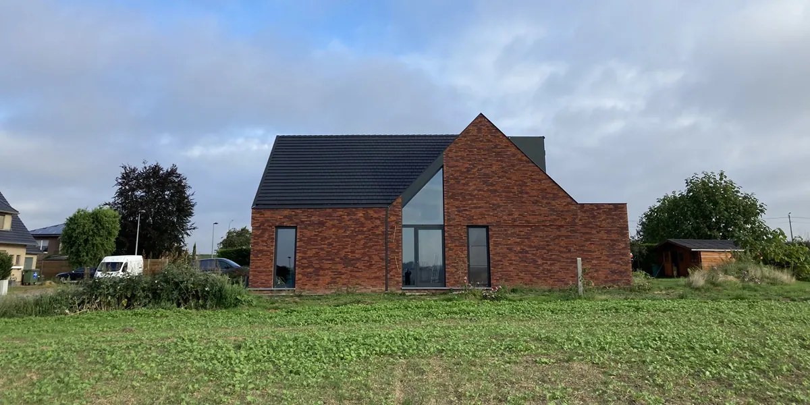
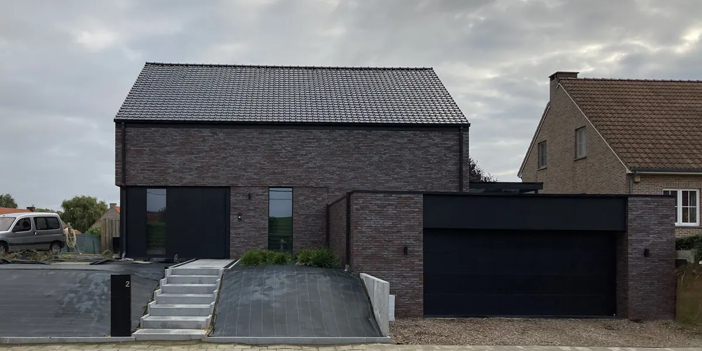
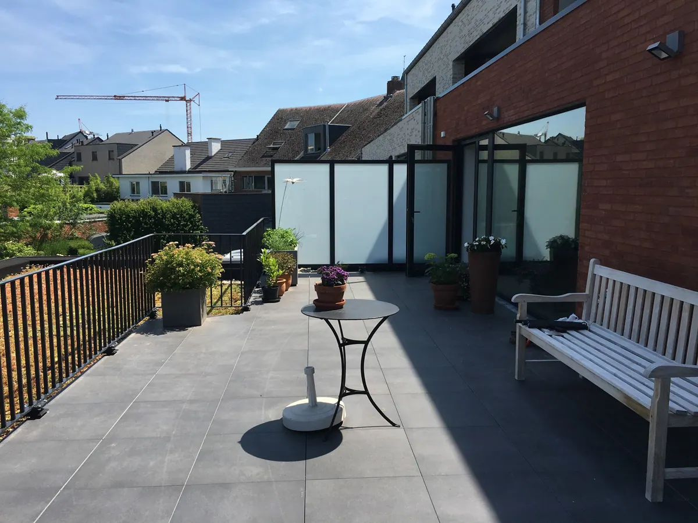
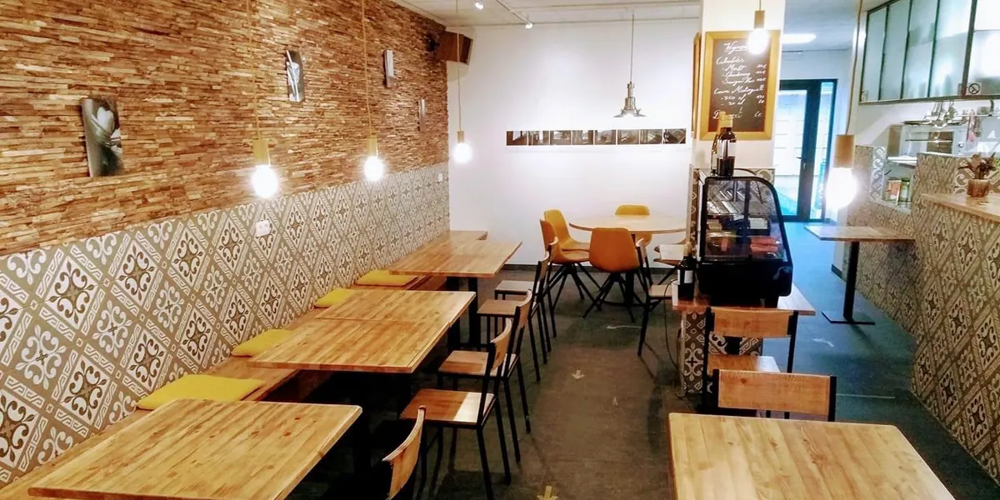
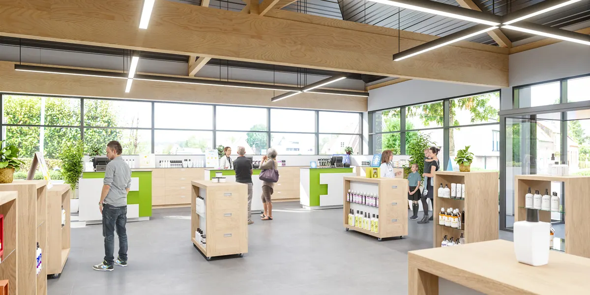
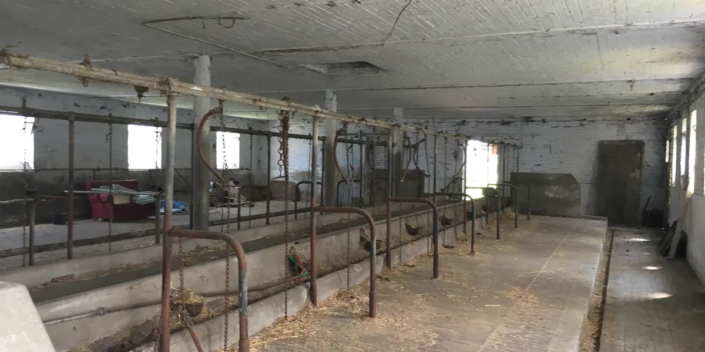
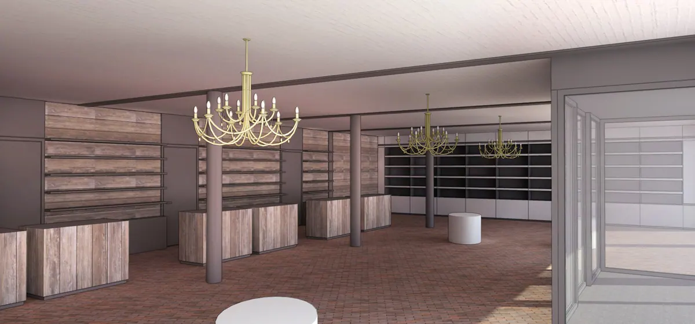
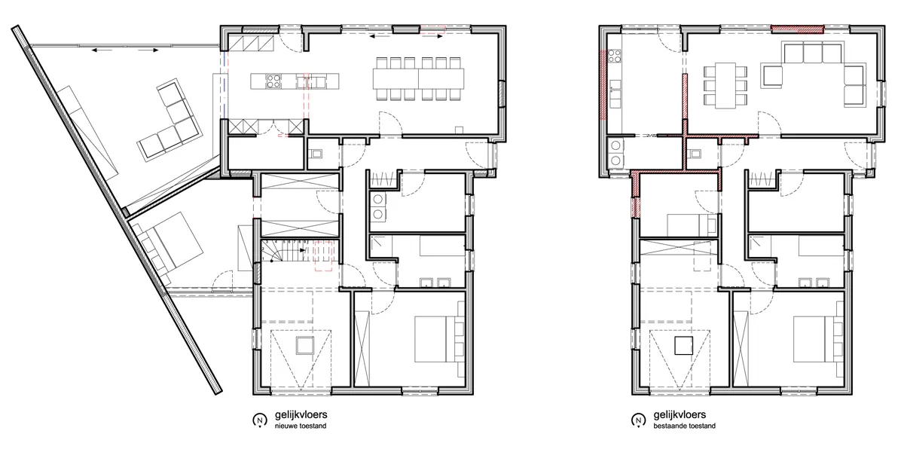
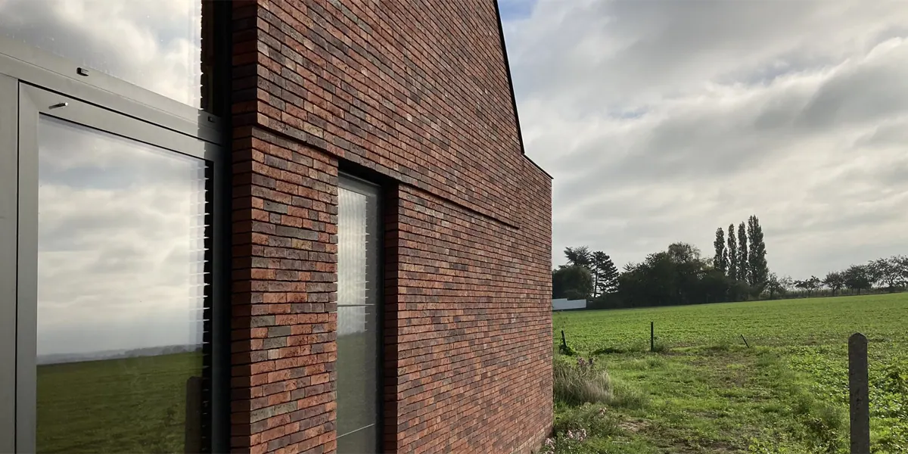

Elk gebouw verdient een tweede leven.
Een nieuwe woning naast de velden, een koestal die apotheek wordt, een oude woning die twee gezinnen huisvest. Stijn Creten tekent het, en volgt het op tot de sleutel.
Recent getekend, elk anders.
Nieuwbouw, verbouwen of iets helemaal anders. Kies wat u zoekt.

2019
2016
2019

2019

VroegerOntwerpVan koestal tot apotheek.
In Neerijse werden een oude koestal en schuur een apotheek met twee praktijkruimtes. Sleep over het beeld en zie het verschil.
Rechts een impressie van het ontwerp.Waarvoor u terecht kan.
Van een woning tot een kantoor, met de stedenbouwkundige vragen erbij.
Bouwen en verbouwen
- Nieuwbouw
- Verbouwen en uitbreiden
- Renoveren
- Restaureren
- Interieur en maatwerk
Voor elke functie
- Eengezinswoningen
- Meergezinswoningen
- Kantoren
- Horeca
- Apotheken en praktijken
Stedenbouw
- Zonevreemde woningen
- Functiewijzigingen
- Woning opsplitsen
- Kangoeroewoningen
Vijf stappen, één architect.
Elk project heeft zijn eigen tempo. Deze stappen komen altijd terug.
Kennismaking
Uw perceel, uw wensen en uw budget.
Schetsontwerp
Eerste ideeën, samen bijgeschaafd.
Vergunning
Het dossier voor de omgevingsvergunning.
Uitvoering
Uitvoeringsplannen en offertes vergelijken.
Oplevering
Opvolging op de werf tot alles klaar is.

Een woning die mee kan met uw leven.
Een duplex die later één woning wordt, een gelijkvloers voor een rolstoel, of twee generaties onder één dak.
"Architectuur is een leerproces dat nooit stopt."
Sinds 2012 tekent Stijn Creten vanuit de Generaal Guffensstraat in Tienen. Wat de moeite waard is om te bewaren, krijgt een nieuwe plaats. Een knelpunt wordt een kans.

Goed om te weten.
Heb ik voor mijn verbouwing een architect nodig?
Voor werken met een omgevingsvergunning, zoals een uitbreiding of iets dat de stabiliteit raakt, meestal wel. Twijfelt u, dan bekijken we het samen.
Kan mijn woning opgesplitst worden?
Dat hangt af van de bestemming, de gemeente en het gebouw zelf. Opsplitsen en functiewijzigingen horen bij de expertise van het bureau.
Kan ik enkel voor een interieur terecht?
Ja. Inrichting, inbouwkasten en maatwerk kan ook los van een bouwproject.
Werkt u ook buiten Tienen?
Ja. Er liepen projecten in onder meer Hélécine, Houwaart, Lubbeek, Neerijse en Merksplas.
Wat neem ik mee naar een eerste gesprek?
Foto's van het perceel of gebouw, bestaande plannen, een idee van uw budget en vooral uw wensen.